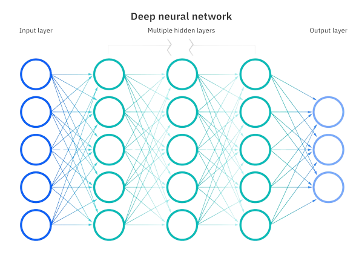

Machine Learning
To become
proficient in machine learning algorithms, the most effective approach is to utilize the
Scikit-Learn framework. Scikit-Learn provides a wealth of pre-defined algorithms that can be easily
implemented by creating class objects. Familiarizing yourself with these algorithms is essential,
especially
those falling under the categories of Supervised and Unsupervised Machine Learning.
- Linear Regression
- Logistic Regression
- Decision Tree
- Gradient Descent
- Random Forest
- Ridge and Lasso Regression
- Ridge and Lasso Regression
- Naive Bayes
- Support Vector Machine
- KMeans Clustering
Neural Network
A neural network is a fundamental concept in machine learning and artificial
intelligence. It's a
computational model inspired by the structure and functioning of the human brain, designed to recognize
patterns and make decisions based on data. Neural networks consist of layers of interconnected nodes, often
referred to as neurons, and are used for various machine learning tasks, including image recognition,
natural language processing, and more.

- Layer
- Hidden Layers
- Output Layer
- Weights and Biases
- Activation Functions
- Forward Propagation
- Backpropagation
- Loss Function
- Training Data
- Hyperparameters